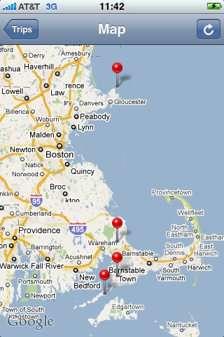
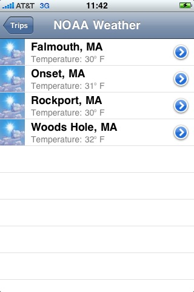
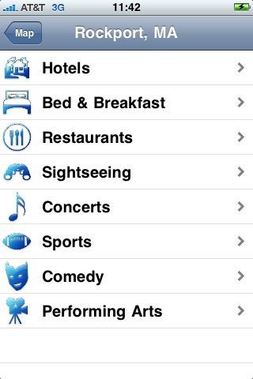

"Traveling to somewhere, somehow"
Jaunt is a travel-based application that lets you create a trip that is
based upon the places you have visited. It's simple to use and
has four high-level features: Maps, Weather, Checklist, and Google
searches
Detailed Features:
- Take a picture for the trip, or, add an existing one
- Search for destinations to add to the trip for pre-planning purposes
- Use the GPS to add a destination on demand
- Display a map of all trip destinations
- Drill-down into each destination and perform searches for
restaurants, hotels, bed and breakfasts, sporting events, comedy, and
concerts
- Provides both 7-day and hourly weather forecasts for the trip
destinations, via NOAA
- Provides a checklist for each trip, so nothing is forgotten
Screen Shots:

|

|

|

|